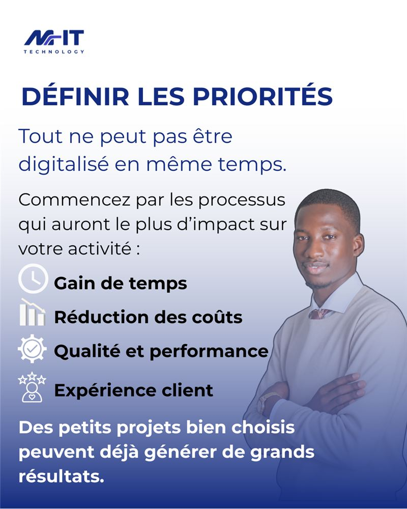
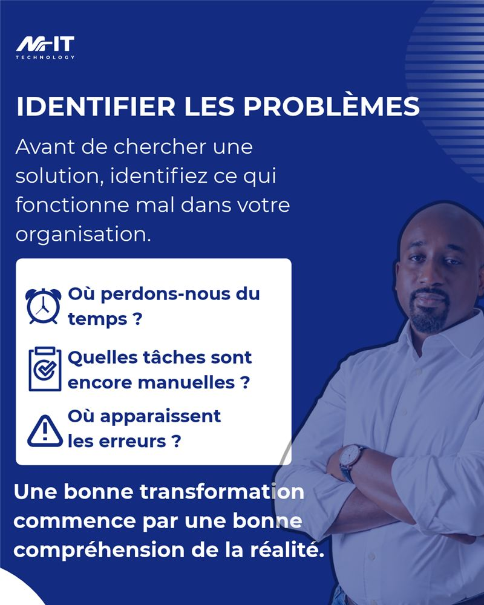
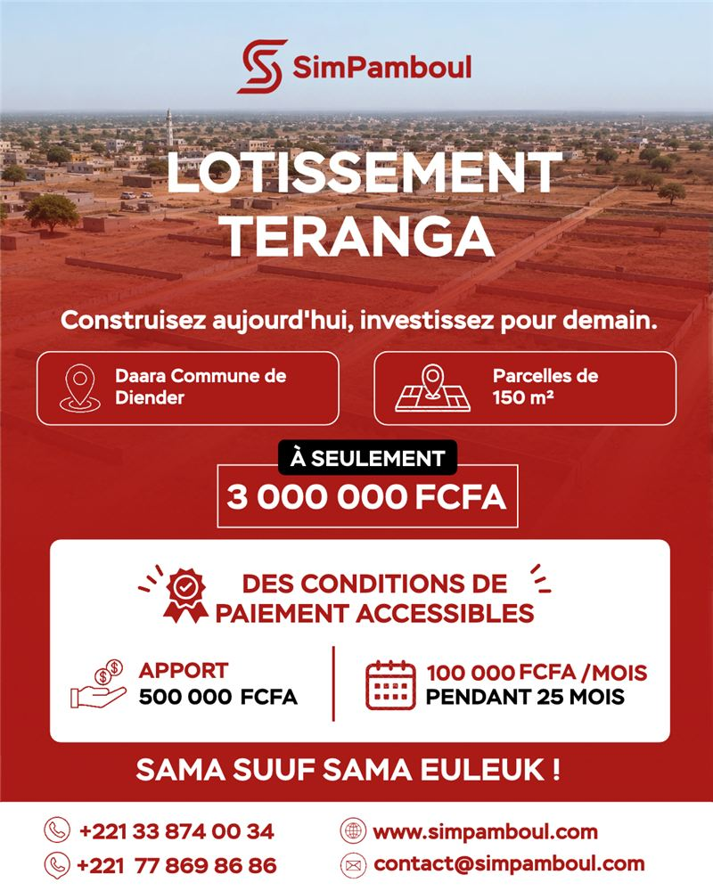

Carrousel · Réseaux sociaux
Un guide en cinq visuels pour M-IT Technology, société de services informatiques.
Marketing digital · Création graphique · Web
Je m’appelle Diarietou Ngom, étudiante en marketing et stratégie. Je conçois des carrousels pour les réseaux sociaux, des affiches et des sites vitrines, de l’idée jusqu’au résultat final.
01 — Projets
Une sélection de travaux pour des marques et des entreprises : contenus pour les réseaux sociaux, supports visuels et site web.


Carrousel · Réseaux sociaux
Un guide en cinq visuels pour M-IT Technology, société de services informatiques.
Site web · HTML et CSS
Un site vitrine pour une boutique de bijoux, avec commande via WhatsApp.
Visuel de marque
Un visuel qui exprime l’univers émotionnel d’une marque de bijoux.

Affiche · Immobilier
Une affiche promotionnelle qui rend une offre immobilière claire et attractive.
02 — À propos
Mon parcours en marketing et stratégie m’a fait découvrir l’univers du digital et de la communication. J’ai choisi d’aller plus loin que la théorie : aujourd’hui, je crée moi-même des contenus pour les réseaux sociaux, des supports visuels et des sites web.
Je me forme en continu au développement web et aux outils numériques, y compris l’intelligence artificielle, pour proposer des réalisations à la fois belles, claires et efficaces.
03 — Compétences
Des visuels qui attirent l'œil et transmettent un message clair.
Des sites vitrines modernes, rapides et adaptés au téléphone.
Une organisation efficace et des outils modernes, dont l’IA.
04 — Parcours
–
Galsen Digital Agency SAS
UNIPRO, Université professionnelle
Marketing, stratégie, communication et découverte de l’univers du digital.
05 — Contact
Je suis ouverte aux échanges, aux collaborations et aux nouvelles opportunités. Écrivez-moi, je vous réponds rapidement.